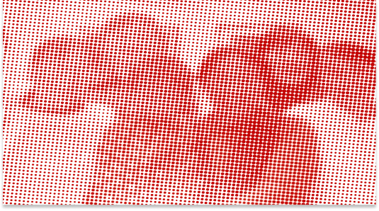

前言
改革开放三十年来，中国的工业化、城市化、经济建设飞速发展，这其中离不开我们亿万打工兄弟姐妹们所付出的劳动和贡献。从乡村到城市，流动打工群体是城乡的纽带和桥梁、是推动中国社会前进的新型劳动大军、是中华民族的脊梁。
我们希望通过打工文化艺术博物馆来记录和反映我们劳动者自己的文化和历史。因为，没有我们的文化就没有我们的历史，没有我们的历史就没有我们的将来。
这也正是我们创办打工文化艺术博物馆和举办这次展览的目的——纪录打工群体的历史变迁，倡导劳动价值的尊重认可。
打工文化艺术博物馆 2008年5月1日
展厅导览
流动的历史
纵向了解我们的打工群体改革开放三十多年来的形成和发展历程，工友们工作、生活的方方面面以及这一阶段发生的重大事件，感受打工生活的艰辛，分享工友们的情感和诉求
女工


女性打工者由于生理和心理的性别特点，使得她们的整体性格较为脆弱、内敛，忍耐力较强，抗争意识较弱，而且整体教育文化水平较低，因此用人单位普遍愿意招收女工，不仅付给的工资比男工低，而且还易于管理，甚至很多老板和管理人员对女工进行身体和语言的性骚扰
儿童
打工工友的孩子分为留守儿童和流动儿童。目前全国共有6000多万跟随祖父母在农村老家上学的留守儿童和3000多万跟随父母在父母务工地上学的流动儿童。仅北京每10个孩子中就有3个是流动儿童
NGO
NGO作为民间公益组织发挥着社会服务的作用，是对政府职能的有益补充